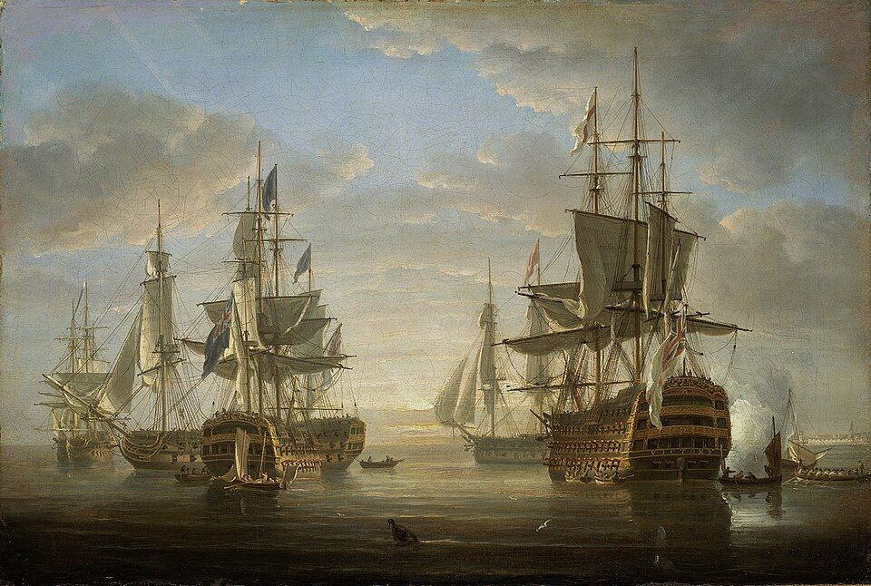

Twenty-eight King's ships and one merchantman, 1771–1805
His ships
Nelson spent thirty-four years in the Navy and about twenty-five of them afloat. He served in everything from a bomb vessel in the Arctic ice to a Spanish three-decker he had captured himself. This is the full list, in order.

Midshipman to post-captain
The bar under each name is drawn to her number of guns. A star marks a ship he fought a fleet action in.
-
1771Midshipman, aged 12
Raisonnable
Third-rate, 64 guns
Capt. Maurice SucklingHis uncle's ship, a French prize, commissioned for a war with Spain over the Falkland Islands that never came. Nelson was entered on her books on 1 January 1771 and joined at Chatham that spring. She paid off after five months.
-
1771–73Captain's servant, then midshipman
Triumph
Third-rate, 74 guns
Capt. Maurice SucklingThe guardship in the Medway, which never went to sea. Suckling used her as a base for his nephew's education: Nelson was given charge of her cutter and decked longboat and learnt to pilot them from Chatham to the Tower of London and down the Swin to the North Foreland, “confident of myself amongst rocks and sands”.
-
1771–72Ship's boy
Mary Ann
West India merchantman
John Rathbone, masterSent by his uncle for a year to Jamaica and Tobago in a merchant ship commanded by an old shipmate. He came back, he wrote, “a practical seaman, with a horror of the Royal Navy”, and with a sailors' saying he never forgot: “Aft the most honour, forward the better man.” It took weeks to reconcile him to a man-of-war.
-
1773Captain's coxswain, aged 14
Carcass
Bomb vessel, 8 guns
Cmdr Skeffington LutwidgeOne of two strengthened ships sent under Captain Phipps to look for a passage across the North Pole. Boys were not allowed; Nelson talked his way in. The ships reached beyond 80° north off Spitsbergen and were beset in the ice for a week. He commanded a four-oared cutter, and went after a polar bear across the floe.
-
1773–76Able seaman, then midshipman
Seahorse
Frigate, 24 guns
Capt. George FarmerTwo years in the East Indies: Madras, Calcutta, Bombay, Ceylon, the Persian Gulf. He stood watches in the foretop, heard his first shots fired in anger against Hyder Ali's armed ketches in February 1775, and made a friend of another midshipman, Thomas Troubridge. At the end of 1775 malaria reduced him “almost to a skeleton”.
-
1776Invalid
Dolphin
Frigate, 24 guns
Capt. James PigotSix months' passage home, nursed by her captain. It was on this voyage that he went through the depression and the “sudden glow of patriotism” described on the life page.
-
1776–77Acting lieutenant
Worcester
Third-rate, 64 guns
Capt. Mark RobinsonA winter of convoy work to Gibraltar and back in foul weather. At eighteen he was trusted with a watch; Robinson said he felt as easy with Nelson on deck as with any officer in the ship. He passed his examination for lieutenant on 9 April 1777.
-
1777–78Second lieutenant
Lowestoffe
Frigate, 32 guns
Capt. William LockerTo Jamaica for the American war. When the first lieutenant hesitated to board a prize in a heavy sea, Nelson jumped into the boat. Locker, who had served under Hawke, gave him his own schooner tender, the Little Lucy, and the advice he quoted all his life: “Lay a Frenchman close and you will beat him.” They wrote to each other for twenty years.
-
1778Third, then first lieutenant
Bristol
Fourth-rate, 50 guns
Flagship of Sir Peter ParkerTaken into the flagship by the commander-in-chief at Jamaica, where promotion came fastest. He rose from third lieutenant to first in five months.
-
1778–79Commander, aged 20
Badger
Brig, 14 guns
First commandAppointed 8 December 1778, to protect the settlers of the Mosquito Shore and the Bay of Honduras from American privateers. When the sloop Glasgow caught fire in Montego Bay, his boats took off her whole crew.
-
1779–80Post-captain, aged 20
Hinchinbrook
Frigate, 28 guns
CaptainPosted on 11 June 1779, three months short of his twenty-first birthday. From that date his rise to admiral depended only on staying alive. Hinchinbrook took him to the San Juan river, where most of her crew died. Cuthbert Collingwood followed him into her, as he had into Lowestoffe and Badger.
-
1780Captain, too ill to serve
Janus
Fifth-rate, 44 guns
CaptainAppointed while up the river in Nicaragua; he reached Jamaica on a stretcher and had to give her up. He went home as a passenger in William Cornwallis's Lion and spent the winter at Bath, slowly getting back the use of his left arm and leg.
-
1781–83Captain
Albemarle
Frigate, 28 guns
CaptainA converted French merchantman that sailed badly. He took a convoy to the Baltic in midwinter, then went to Quebec, where he fell in love, and to New York, where he joined Lord Hood and met Prince William. Chased by four French ships of the line off Boston, he escaped by running among shoals where they dared not follow. In March 1783 his attack on the French garrison of Turks Island was beaten off.
-
1784–87Captain; senior officer, Leeward Islands
Boreas
Frigate, 28 guns
CaptainThree unhappy years of peace in the West Indies. He insisted on enforcing the Navigation Acts against American traders, who were now foreigners, in defiance of the islands' merchants, the governor and his own admiral. He seized four ships at Nevis, was sued for £4,000 and stayed aboard for eight weeks to avoid arrest. He was right in law and it did him no good at the Admiralty. He married Fanny Nisbet on Nevis in March 1787.
The war with France
After five years on half-pay in Norfolk.
-
1793–96Captain, then commodore
Agamemnon
Third-rate, 64 guns
Built at Buckler's Hard, 1781His favourite, “without exception the finest 64 in the service”, manned largely by volunteers from Norfolk who called themselves Agamemnons. In her he met the Hamiltons at Naples, fought four French frigates off Sardinia, lost the sight of an eye in Corsica, and raked the Ça Ira. By 1796 she was so worn that her hull was held together with cables passed under the keel.
She fought again at Copenhagen and Trafalgar without him and was wrecked in the River Plate in 1809.
-
1796–97Commodore
Captain
Third-rate, 74 guns
Capt. Ralph MillerHis first 74. In her he seized Elba, covered the evacuation of Corsica, and on 14 February 1797 left the line at Cape St Vincent. She came out of that day with her fore-topmast gone, her wheel shot away and eighty casualties.
-
Dec. 1796–Feb. 1797Commodore
La Minerve
Frigate, 38 guns
Capt. George CockburnA French prize, borrowed for the dash to bring the garrison off Elba. She took the Santa Sabina, backed her topsail in the face of the Spanish fleet to pick up Hardy, and sailed through that fleet in fog two nights before the battle.
-
Feb.–March 1797Commodore, then rear-admiral
Irresistible
Third-rate, 74 guns
Capt. George MartinHe shifted his pendant into her on the evening of St Vincent, Captain being a wreck, and learnt aboard her that he was a rear-admiral and a Knight of the Bath.
-
May–Aug. 1797Rear-Admiral of the Blue
Theseus
Third-rate, 74 guns
Capt. Ralph MillerShe arrived from the Channel in the year of the great mutinies with a sullen crew. Nelson and Miller were put in to cure her. Within a fortnight a paper was dropped on the quarterdeck: “Success attend Admiral Nelson! God bless Captain Miller! We thank them for the officers they have placed over us.” From her he fought the boats off Cádiz and went to Tenerife, and in her cockpit his arm was taken off.
-
Aug.–Sept. 1797Invalid
Seahorse
Frigate, 38 guns
Capt. Thomas FremantleThe passage home from Tenerife, in a ship of the same name as the one that had taken him to India. Fremantle had been shot through the arm the same night; his wife Betsey nursed both of them and thought the admiral a very bad patient.
-
1798–99Rear-Admiral of the Blue
Vanguard
Third-rate, 74 guns
Capt. Edward Berry, then Thomas HardyFlag hoisted 29 March 1798. Dismasted in a gale off Sardinia in May and re-rigged at sea in four days; flagship at the Nile on 1 August, with 106 casualties. That December she carried the King and Queen of Naples, the Hamiltons and the royal treasure to Palermo through the worst storm Nelson said he had ever seen.
-
1799–1800Rear-Admiral of the Red
Foudroyant
Third-rate, 80 guns
Capt. Thomas Hardy, then Sir Edward BerryA new and powerful two-decker. His flagship during the retaking of Naples in June 1799, the darkest episode of his career, which is told on the legacy page; at the blockade of Malta; and at the capture of the Généreux. He left her at Leghorn in July 1800 to go home overland. She survived until 1897, when she was wrecked on Blackpool sands.
-
Jan.–Feb. 1801Vice-Admiral of the Blue
San Josef
First-rate, 112 guns
Capt. Thomas HardyHis own prize from St Vincent, refitted for the Channel Fleet: the largest ship he ever flew his flag in. He was aboard her at Torbay when he heard that Horatia had been born.
-
Feb.–June 1801Vice-Admiral of the Blue
St George
Second-rate, 98 guns
Capt. Thomas HardyHis flagship for the Baltic expedition, too deep for the shoals off Copenhagen. A fortnight after the battle, when the Swedish fleet was reported at sea and St George was held back by the shallows, he had himself rowed after the squadron for six hours through a freezing night, in an open boat without a greatcoat.
-
March–April 1801Vice-Admiral of the Blue
Elephant
Third-rate, 74 guns
Capt. Thomas FoleyBorrowed for her lighter draught, with the captain who had led the line at the Nile. From her quarterdeck on 2 April 1801 he did not see signal No. 39, and at her rudder-head he wrote to the Crown Prince of Denmark. See Copenhagen.
-
July–Aug. 1801Vice-Admiral of the Blue
Medusa
Frigate, 32 guns
Capt. John GoreFlagship of the anti-invasion squadron in the Channel, and for the failed boat attack on Boulogne.
-
Aug.–Oct. 1801Vice-Admiral of the Blue
Amazon
Frigate, 38 guns
Capt. Samuel SuttonRiou's frigate from Copenhagen. Nelson lay in her in the Downs through the autumn, seasick, cold and wanting to be at Merton, until the preliminaries of peace let him strike his flag on 22 October.
-
May–July 1803Vice-Admiral of the Blue
Amphion
Frigate, 32 guns
Capt. Thomas HardyWhen war broke out again Victory was wanted off Brest, so Nelson went out to the Mediterranean in a frigate, with his staff crammed in around him, and waited two months for his flagship to catch up.
-
1803–05Vice-Admiral of the Blue, then of the White
Victory
First-rate, 104 guns
Capt. Thomas HardyTwo years and three months, the longest he spent in any ship as an admiral: the watch on Toulon, the chase to the West Indies, twenty-five days at home, and Trafalgar. She brought his body back to England, and she is still there.
What the list shows
Until he was thirty-four Nelson had commanded nothing bigger than a 28-gun frigate, and had never been in a fleet action. Most of his formative service was in small ships on distant stations, where a young officer made his own decisions because there was nobody to ask. That habit, more than any theory of tactics, is what he took into his battles.
He also never commanded a three-decker as a captain. He went straight from a 64 and a 74 to flying his flag, and for his two most difficult battles, the Nile and Copenhagen, he chose to fight in a 74 like everyone else.
And he kept the same people round him. Thomas Hardy was his captain in six of these ships. Berry, Miller, Foley, Fremantle and Troubridge recur for a decade. Their faces are on the captains page.